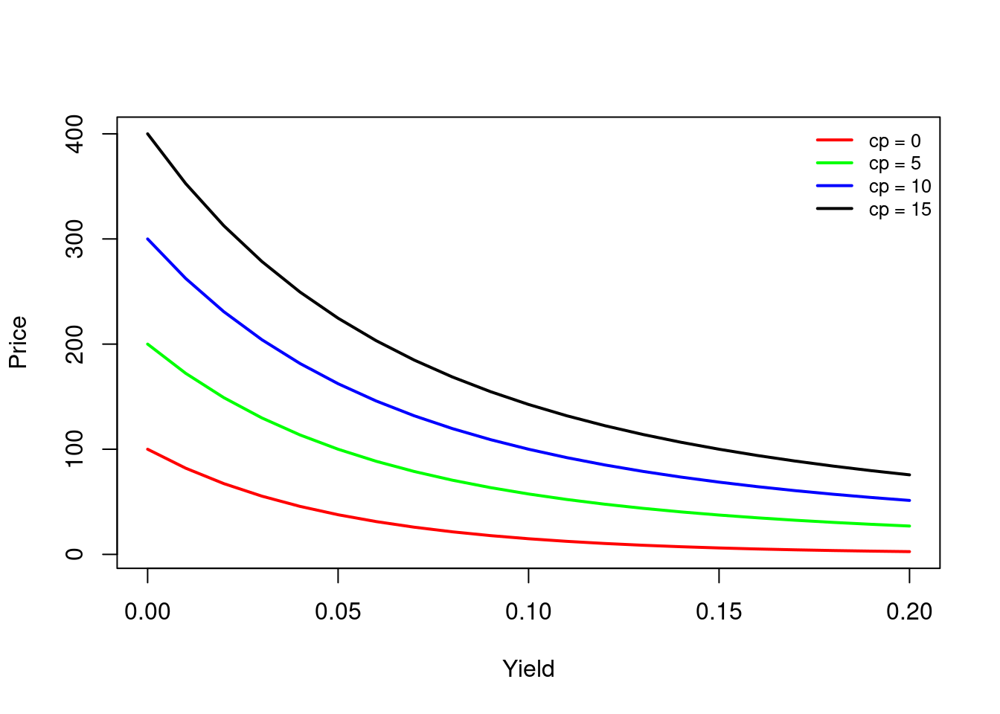
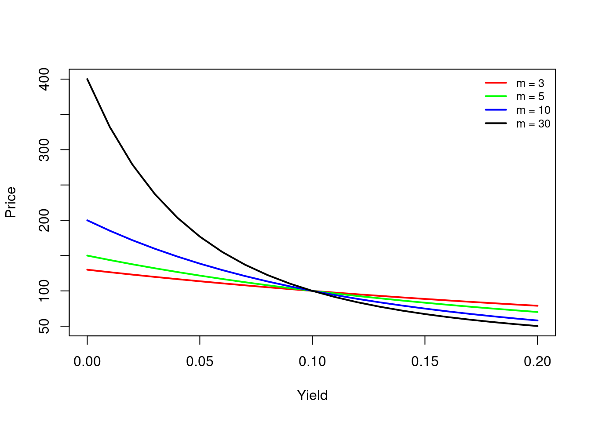
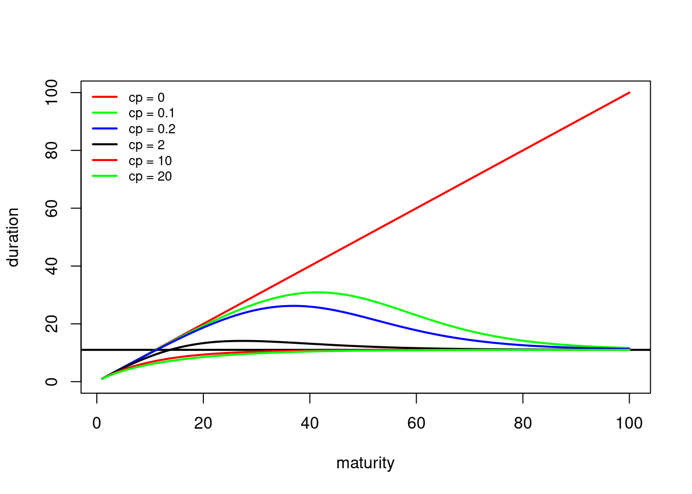
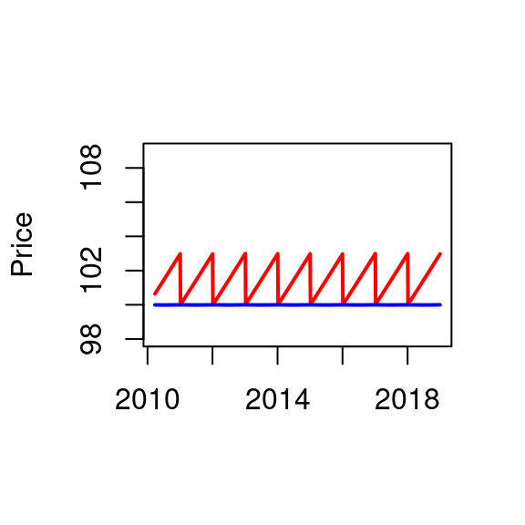
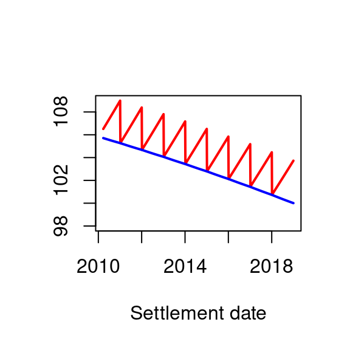

## Loading required package: fOptions## Loading required package: timeSeries## Loading required package: fBasics## Loading required package: fExoticOptions## Loading required package: fAsianOptions## Loading required package: fImport## Loading required package: RCurl## Loading required package: Hmisc## Loading required package: lattice## Loading required package: survival## Loading required package: Formula## Loading required package: ggplot2##
## Attaching package: 'Hmisc'## The following objects are masked from 'package:base':
##
## format.pval, unitsAn honest man’s word is as good as his bond — Miguel de Cervantes
This chapter provides a elementary survey of fixed income calculations, with the aim of developing a basic intuition regarding the relationship between the price and the yield of fixed income instruments.
In a simplified framework with even intervals between payments, the present value of a bond with coupon rate \(c\) and maturing in \(n\) years is given by \[P(r) = \sum_{i=1}^n \frac{cN}{(1+r)^i} + \frac{N}{(1+r)^n} (\#eq:fixedinBonds-1)\]
where:
coupon rate, in decimal form
nominal
maturity, measured in years
yield, in decimal form
The formula can be implemented in one line:
SimpleBondPrice <- function(coupon, n, N=100, yield) {
N*(sum(coupon/(1 + yield)^(1:n)) + 1/(1+yield)^n)
}As an illustration, consider a bond with 3 years to maturity, a \(5\%\) coupon rate. With yield at \(4\%\), price per \(100\$\) nominal amount is
P <- SimpleBondPrice(coupon=.05, n=3, yield=.04)or \(P = 102.78\).
Figure ?? represents the price-yield relationship for 20 year bonds with coupons ranging from 0 to 15%. In addition to the obvious non-linear nature of the price-yield relationship, it is worth noting that the convexity of the price-yield curve increases with the coupon rate.
## plot price-yield as a function of coupon
cp <- c(0, .05, .1, .15)
cl <- c('red', 'green', 'blue', 'black')
y <- seq(0, .20, .01)
n <- 20
p <- matrix(0, length(cp), length(y))
for(i in seq_along(cp)) {
p[i,] <- sapply(y, function(y) SimpleBondPrice(cp[i], n, yield=y))
}
plot(y, p[1,], type='l', lwd=2, xlab='Yield', ylab='Price', col=cl[1], ylim=c(min(p), max(p)))
for(i in 2:4) {
lines(y, p[i,], type='l', lwd=2, col=cl[i])
}
legend('topright', paste('cp = ', cp*100, sep=''), cex=.8, lwd=2, bty='n', col=cl)
Figure ?? represents the price-yield relationship for 10% bonds with maturities ranging from 3 to 30 years. Regardless of maturity, the bonds are worth 100 when the yield is identical to the coupon. This can be easily established by writing equation (\[eq:fixedinBonds-1\]) as:
\[P(r) = N \left[\frac{c}{r} \left(1-\frac{1}{(1+r)^n}\right) + \frac{1}{(1+r)^n} \right]\]
from which one concludes that \(P(r) = N\) when \(c=r\).
## plot price-yield as a function of maturity
m <- c(3, 5, 10, 30)
cl <- c('red', 'green', 'blue', 'black')
y <- seq(0, .20, .01)
cp <- .1
p <- matrix(0, length(m), length(y))
for(i in seq_along(m)) {
p[i,] <- sapply(y, function(y) SimpleBondPrice(cp, m[i], yield=y))
}
plot(y, p[1,], type='l', lwd=2, xlab='Yield', ylab='Price', col=cl[1], ylim=c(min(p), max(p)))
for(i in 2:4) {
lines(y, p[i,], type='l', lwd=2, col=cl[i])
}
legend('topright', paste('m = ', m, sep=''), cex=.8, lwd=2, bty='n', col=cl)
The interest rate risk of fixed income instruments is traditionally measured by Variation, Sensitivity and Duration.
Variation \(V\) (also known as dollar duration) is the negative of the derivative of price with respect to yield \[\begin{aligned} V &=& -\frac{\partial P(r)}{\partial r} \\ &=& \sum_{i=1}^n \frac{i F_i}{(1+r)^{i+1}} \end{aligned}\]
Variation <- function(coupon, n, N=100, yield) {
100*sum(sapply(1:n, function(i) ifelse(i<n, i*coupon/(1 + yield)^(i+1),
n*(1+coupon)/(1+yield)^(n+1))))
}Variation is often measured by “PV01”, which is the change in bond price for a 1 basis point change in yield: \[\textrm{PV01} = V \times 10^{-4}\]
Variation is a useful tool for computing the approximate yield of a portfolio, given the yield of each bond. Consider two bonds with prices \(P_1(r_1)\) and \(P_2(r_2)\) and variations \(V_1(r_1)\) and \(V_2(r_2)\). We look for the common yield \(r^*\) such that: \[P = a_1 P_1(r^*) + a_2 P_2(r^*) \tag{16.1}\]
Use a first-order Taylor’s expansion of price \(P_i(r)\) at \(r_i\): \[P_i(r^*) = P_i(r_i) + (r^*-r_i) V_i(r_i)\]
Replacing \(P_i(r^*)\) by this approximation in (\[eq:fixedinBonds-2\]) yields:
\[\sum_{i=1}^2 a_i (r^*-r_i) V_i(r_i) = 0\]
which gives \[r^* = \frac{\sum_{i=1}^2 a_i r_i V_i(r_i)}{\sum_{i=1}^2 a_i V_i(r_i)}\]
This approximation is valid when the yields \(r_i\) are not too far apart, as illustrated by the following calculation.
Consider a portfolio made of two bonds, described in Table \[tab:fixedinBonds-1\].
| Bond | Coupon (%) | Maturity | Quantity | Yield (%) |
|---|---|---|---|---|
| A | 5 | 5 | 2 | 5.20 |
| B | 6 | 7 | 3 | 5.60 |
The approximate portfolio yield is computed as follows:
cp <- c(.05, .06); r <- c(.052, .056); T <- c(5,7); a<- c(2,3)
P <- sapply(1:2, function(i) SimpleBondPrice(cp[i], T[i], yield=r[i]))
V <- sapply(1:2, function(i) Variation(cp[i], T[i], yield=r[i]))
r <- sum(r*V*a)/sum(V*a)which gives an approximate yield of \(r=5.47 \%\). An exact calculation involves solving for \(r^*\) the non-linear equation \[P = \sum_{i=1}^2 a_i P_i(r^*)\]
fun <- function(r) {
sum(P) - sum(sapply(1:2, function(i) SimpleBondPrice(cp[i], T[i], yield=r)))}
r <- uniroot(fun, c(.05, .06))$rootwhich gives the exact portfolio yield \(r= 5.43 \%\).
The sensitivity \(S\) (also called modified duration) is the percent change in price per unit change in yield: \[S = \frac{1}{P} V = \frac{1}{P(1+r)} \sum_{i=1}^n \frac{i F_i}{(1+r)^i}\]
Sensitivity <- function(coupon, n, N=100, yield) {
Variation(coupon,n,N,yield)/SimpleBondPrice(coupon, n, N, yield)
}Consider a portfolio made of \(n\) bonds, each with nominal amount \(q_i\), price \(P_i\) and modified duration \(S_i, i=1, \ldots, n\). Let \(P\) be the value of the portfolio, we want to determine the modified duration of the portfolio
\[S = \frac{1}{P} \frac{\partial P}{\partial r}\]
\[\begin{aligned} S &=& \frac{1}{P} \sum_i q_i \frac{\partial P_i}{\partial r} \nonumber \\ &=& \frac{1}{P} \sum_i q_i \frac{P_i}{P_i}\frac{\partial P_i}{\partial r} \nonumber \\ &=& \frac{1}{P} \sum_i q_i P_i S_i \nonumber \\ &=& \sum_i \frac{q_i P_i}{P} S_i \tag{16.2}\end{aligned}\]
The modified duration of a portfolio is the weighted average of the modified durations of the bonds. The weight associated with each bond is the fraction of portfolio value associated with the bond.
The Macaulay duration \(D\) (named after Frederick Macaulay who introduced this risk measure), can be interpreted as the average maturity, weighted by the present value of the cash flow at each payment date.
\[D = \sum_{i=1}^n \frac{i F_i}{P (1+r)^i} \tag{16.3}\]
The Macaulay Duration is closely related to Sensitivity:
\[S = \frac{1}{(1+r)} D\]
SimpleDuration <- function(coupon, n, yield) {
100*sum(sapply(1:n, function(i) ifelse(i<n, i*coupon/(1 + yield)^i,
n*(1+coupon)/(1+yield)^n)))/SimpleBondPrice(coupon,n,yield=yield)
}These measures can be used to estimate the approximate impact of yield change on price. Using the previous example, the exact price change caused by a \(0.1\%\) yield increase is:
d1 <- SimpleBondPrice(coupon=.06, n=10, yield=.051) - SimpleBondPrice(coupon=.06, n=10, yield=.05)or \(d_1 = -0.806\). An approximate calculation with Duration yields:
P <- SimpleBondPrice(coupon=.06, n=10, yield=.05)
D <- SimpleDuration(coupon=.06, n=10, yield=.05)
d2 <- -P * D/(1+.05) * .001or a change in price of \(d_2 = -0.81\) for a \(.1\%\) increase in yield. Duration is a popular measure of price sensitivity because of its intuitive interpretation: the price sensitivity of a bond with duration \(D\) is the same as the one of a zero-coupon bond maturing in \(D\) years.
It is a surprising fact that the duration of coupon bonds does not increase indefinitely as maturity increases. The following script computes the duration of bonds of varying maturities and coupon rates.
coupon <- c(0, .1, .2, 2, 10, 20)/100
maturity <- seq(from=1, to=100, by=1)
yield <- .1
res <- NULL
for(c in coupon){
res <- rbind(res, sapply(maturity, function(n) SimpleDuration(c, n, yield)))
}The resulting values are plotted in Figure ??. As expected, the duration of the zero-coupon bond is identical to its maturity. For all other bonds, the duration converges to a constant as maturity increases, regardless of coupon rate.

This can be formally shown by first deriving an analytical formula for Duration. Let \(c\) be the coupon rate and \(r\) the bond yield. The price of a bond with nominal of 1 is:
\[\begin{aligned} P &=& \frac{c}{r} (1-(1+r)^{-n}) + (1+r)^{-n} \\ &=& \frac{1}{r} \left(c(1-(1+r)^{-n}) + (1+r)^{-n} \right) \\ &=& \frac{1}{r} g(r)\end{aligned}\]
with \(g(r) = c(1-(1+r)^{-n}) + (1+r)^{-n}\).
Now, \[\begin{aligned} \frac{\partial \log P}{\partial r} &=& -\frac{1}{r} + \frac{g'(r)}{g(r)} \\ &=& \frac{1}{P} \frac{\partial P}{\partial r} \end{aligned}\]
But, \[\begin{aligned} D &=& -\frac{1+r}{P} \frac{\partial P}{\partial r} \\ &=& (1+r) \left[ \frac{1}{r} - \frac{g'(r)}{g(r)} \right] \\ &=& \frac{1+r}{r} - (1+r)\frac{g'(r)}{g(r)} \\ &=& \frac{1+r}{r} - (1+r)\frac{n(c-r)(1+r)^{-1}+1}{c((1+r)^n-1)+r} \\ &=& \frac{1+r}{r} - \frac{n(c-r)+1+r}{c((1+r)^n-1)+r} \end{aligned}\]
The last expression shows that duration converges towards \(\frac{1+r}{r}\) as maturity goes to infinity.
Consider a portfolio made of \(n\) bonds, each with nominal amount \(q_i\), price \(P_i\) and duration \(D_i, i=1, \ldots, n\). Let \(P\) be the value of the portfolio, what is its Duration? Since Duration is related to sensitivity by the relation \[D = (1+r) S\]
multiplying both sides of equation \[eq:mod-duration\] by \((1+r)\) yields:
\[D = \sum_i \frac{q_i P_i}{P} D_i \tag{16.4}\]
Bonds prices are quoted in “flat” or “clean” price, and not in net present value. The clean price being the net present value less the accrued interest. Therefore, the bond quoted price is not the amount that the buyer disburses when she buys a bond. The reason for this apparent complication is illustrated in Figure ?? which plots the change over time of a bond clean price and present value, with yield held constant. Quoting a bond by net present value would be impractical, because of the discontinuity around the coupon payment date. The clean price, however, remains steady over time, when yield is held constant.
The plots are obtained as follows, using the function of package :
# define a bond
b375 <- Bond('375', myDate('01jan2000'), myDate('04jan2019'), 0.0375, 100, 'a')
b300 <- Bond('300', myDate('01jan2000'), myDate('04jan2019'), 0.0300, 100, 'a')
dtToday <- myDate('25mar2010')
dt <- timeSequence(dtToday, myDate('04jan2019'), by='day')
dt <- dt[seq(1, length(dt),by=4)]
# compute series of clean price, accrued interest and present value
# for given yield
bondcalc <- function(bond, y) {
p <- sapply(dt, function(d) BondYield2Price(bond, d, y))
ac <- rep(NA, length(p))
for(i in seq(length(p))){ac[i] <- BondAC(bond, as.Date(dt[i]))}
cp <- p-ac
list(p=p, ac=ac, cp=cp)
}
bc1 <- bondcalc(b300, .03)
bc2 <- bondcalc(b375, .03)
